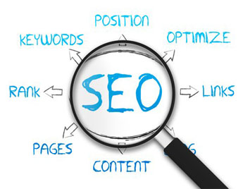

Criação de Conteúdo para Internet
Aula ministrada pelo professor mestre Antonio Fiamenghi Neto, aprendemos sobre SEO significa Search Engine Optimization (Otimização para mecanismos de busca). É um conjunto de técnicas de otimização para sites, blogs e páginas na web. Essas otimizações visam alcançar bons rankings orgânicos gerando tráfego e autoridade para um site ou blog.
Uma das maiores ambições das empresas que investem em Marketing Digital é alcançar as primeiras posições nos mecanismos de busca — afinal, quem não quer cliques gratuitos e mais visitantes em seu site?
O marketing digital é um conjunto de atividades que empresas fazem na web com o intuito de atrair novos negócios, criar um relacionamento com o público nas redes sociais, fazer com que a marca tenha uma identidade no mundo virtual.
Resumidamente é promover produtos em redes sociais. Apesar de ser usado principalmente por grandes empresas, está disponível para todo tipo de empresa, já que não é preciso grandes investimentos para conseguir bons retornos.
O conteúdo nunca é fácil de ser feito afinal é preciso planejar para ter um bom conteúdo, ainda mas que ninguém é dono dele e você acabará com uma confusão que comprometerá seriamente a qualidade.
Para chamar mais atenção do público pode estar usando outras mídias além do texto, pode usar imagem, vídeos e o infográfico, que mistura imagem com texto para maior entendimento do seu público alvo. Com infográficos, é mais fácil compartilhar e entender informações complexas. Eles são ferramentas essenciais no mundo do marketing, que vem se tornando cada vez mais visual.